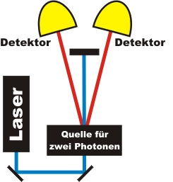

Koinzidenzmethode
Übersicht
Wenn zwei Photonen in einem sehr kurzen Zeitabstand (<2ns) gleichzeitig von zwei Detektoren registriert werden, spricht man von einer Koinzidenz. Koinzidenzereignisse sind die Grundlage von Experimenten mit einzelnen Photonen. Alle Experimente auf der Homepage werden nur ausgewertet, wenn eine Koinzidenz vorliegt. Die Einzelereignisse ohne Koinzidenz werden aus den Messdaten herausgefiltert und gelöscht. Nur über die Koinzidenzmethode ist es möglich ein einzelnes Phtoon zu präparieren. In diesem Abschnitt wird zunächst die Koinzidenzmethode für die Schule ohne experimentelle Verluste mit Einzelereignissen vorgestellt. Für die Universität erfolgt die Diskussion mit kontinuierlicher Datenrate und den Photonenverlusten. Gleichzeitig kann hierbei die Polarisationsabhängigkeit der parametrischen Fluoreszenz untersucht werden. Für die Untersuchung der Quantenphänomene auf dieser Homepage ist das Verständnis der Koinzidenzmethode nicht zwingend erforderlich.
Kapitel 1: Koinzidenzmethode für die Schule (ohne Verluste) Kapitel 2: Koinzidenzmethode für die Universität

Experiment zur Messung von gleichzeitig zwei Photonen (Koinzidenz)